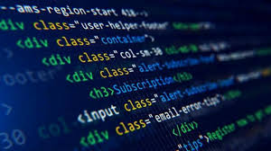

Muhammad Abdurrahim As-Silmi
Murid Kelas 10
SMK Wikrama Bogor
22 Juni 2008, Bogor, Jawa Barat
Halo Semua, selamat datang di Personal Web saya. Perkenalkan nama saya Muhammad Abdurrahim As-Silmi, saya merupakan salah satu murid di SMK Wikrama Bogor yang mengambil jurusan PPLG atau Pengembangan Perangkat Lunak Dan Gim.
Murid Kelas 10
SMK Wikrama Bogor
22 Juni 2008, Bogor, Jawa Barat
SMK Wikrama Bogor didirikan oleh Ir. Itasia Dina Sulvianti dan Dr.H.RP Agus Lelana dibawah naungan Yayasan Prawitama pada tahun 1996 di bekas gudang KUD. Kompetensi keahlian yang pertama dibuka pada saat itu adalah sekretaris dengan jumlah hanya 34 siswa. Seiring berjalannya waktu, jumlah siswa SMK Wikrama Bogor setiap tahunnya terus bertambah. Sehingga pada tahun 2001, secara bertahap SMK Wikrama Bogor menempati gedung yang lebih luas diatas tanah ± 5000m2, berlokasi di Jalan Raya Wangun Kelurahan Sindangsari Kota Bogor. Hingga saat ini, SMK Wikrama Bogor memiliki 1596 siswa dengan 51 guru pendidik. Kompetensi keahlian di SMK Wikrama Bogor pun terus berkembang. SMK Wikrama Bogor membuka 7 kompetensi keahlian, diantaranya (1) Manajemen Perkantoran dan Layanan Bisnis, (2) Pemasaran, (3) Pengembangan Perangkat Lunak dan Gim, (4) Teknik Jaringan Komputer dan Telekomunikasi, (5) Desain Komunikasi Visual, (6) Kuliner, dan (7) Perhotelan. Kesuksesan SMK Wikrama Bogor saat ini tentunya tidak lepas dari sejarah SMK Wikrama Bogor mulai dari membentuk visi dan misi, kerja keras hingga diakui dunia internasional hingga prestasi dan pengharagaan yang didapatkan SMK Wikrama Bogor sejak awal didirikan.
PPLG atau Pengembangan Perangkat Lunak dan Gim adalah sebuah jurusan di SMK (Sekolah Menengah Kejuruan). Jurusan ini mempelajari dan mendalami cara-cara mengembangkan perangkat lunak. Mulai dari pembuatan, pemeliharaan, manajemen kualitas, dan manajemen organisasi pengembangan perangkat lunak. Selain itu, jurusan PPLG juga berhubungan dengan software komputer seperti pembuatan aplikasi, website, game dan semua yang berhubungan dengan pemrograman. Singkatnya, jurusan PPLG erat kaitannya dengan coding, desain, dan algoritma.
